6.1 环境、板框与外形
Quickstart 两个案例已经带你画过两块 PCB。这一章把 PCB 编辑器系统地讲一遍。第一页：PCB 编辑器的环境（菜单、图层、显示），以及板框和机械结构——包括怎么把板子做成任何你想要的形状。
这一章讲什么#
6.1 环境、板框与外形菜单地图、图层与显示；矩形/圆形/多边形板框；导入 DXF 做任意形状；挖槽开孔；尺寸标注
6.2 布局、布线与铜皮布局工具、布线模式与拐角、线宽、过孔；铺铜、填充、禁止区域、铺铜管理器、布尔运算
6.3 丝印、图案与编辑技巧文字和图片丝印、用铜和阻焊做出金色图案、板子颜色、彩色丝印；转换、布尔运算、阵列等编辑技巧
6.4 检查、同步与输出DRC 与自定义 DRC、DFM、泪滴、测量；与原理图同步；拼板、焊接辅助、SMT 选型的坑；各种导出
PCB 编辑器的环境#
菜单地图#
PCB 编辑器比原理图多了「布线」菜单（V4.1.93 实测）：
| 菜单 | 主要内容 | 在哪讲 |
|---|---|---|
| 编辑 | 复制、特殊复制、合并为闭合线条、分散为独立线条、编辑轮廓、裁剪、挖空、转为、布尔运算、阵列、添加圆角/斜角、查找 | 6.3 |
| 视图 | 2D/3D 模式、2D/3D 预览、适应板框、轮廓视图、显示颜色、切换亮度、翻转板子、单位、网格、飞线、高亮 | 本页 |
| 放置 | 器件、过孔、缝合孔、包地孔、焊盘、板框、铺铜/填充/挖槽/禁止/约束区域、线条、测试点、文本、图片、尺寸、堆叠表、钻孔表、画布原点、3D 外壳 | 本页、D-2、D-3 |
| 布线 | 单路/差分对/多路布线、拉伸导线、等长调节、扇出、自动布线、布线模式、布线拐角、布线宽度、移除回路、清除布线 | 6.2、7.2 |
| 布局 | 自动元件布局、自动位号布局、组合、属性位置、互换位置、翻面、偏移、对齐、分布、旋转、翻转 | 6.2 |
| 设计 | 导入变更、设计规则、DRC、DFM、板子形状、分配位号、交叉选择、各种管理器 | 6.4、7.1 |
| 工具 | 测量、泪滴、拼板、合板、移除未使用焊盘、图层管理器、铺铜管理器、3D 模型管理器、焊接辅助、SMT 选型、PCB 对比 | 6.4 |
| 导出 | Gerber、坐标、BOM、ODB++、3D 文件、DXF、PDF、交互式 BOM、PCB 信息…… | 6.4 |
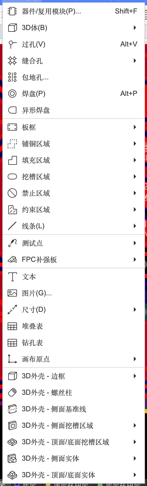
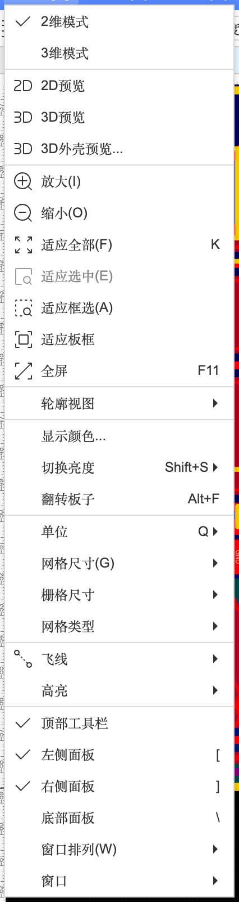
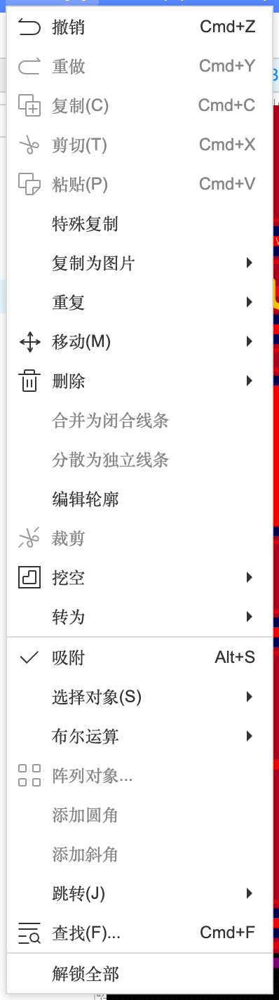
图层、显示与“看清楚”#
图层的意义在 A-4（层叠爆炸图）和 2.9 PCB 基础讲过。画复杂的板子时，这些“看清楚”的功能很常用：
| 功能 | 位置 | 用途 |
|---|---|---|
| 切换当前层 | 底部图层栏单击 | 画线、放文字、铺铜都在“当前层”上 |
| 显示 / 隐藏某层 | 右侧「图层」面板的眼睛图标 | 比如只看底层走线（案例 B 就是这样截出 USB 走线图的） |
| 显示颜色… | 视图菜单 | 每类图元（导线、焊盘、铺铜、丝印…）单独开关显示 |
| 切换亮度 | 视图菜单 / 工具栏 | 非当前层变暗，只突出当前层 |
| 翻转板子 | 视图菜单 / 工具栏 | 从背面看（检查底层丝印是不是正的，B-3） |
| 轮廓视图 | 视图菜单 | 只显示轮廓线，看重叠的东西 |
| 飞线 | 视图 → 飞线 | 隐藏 / 显示全部或所选元件的飞线 |
| 高亮 | 视图 → 高亮 | 高亮网络 / 器件 / 选中，取消高亮，提高/降低亮度 |
| 网格尺寸 | 视图 → 网格尺寸 | 1.27 / 0.025 / 0.1 / 0.25 / 0.5 / 1.0 mm 等，每项同时显示 mil 值 |
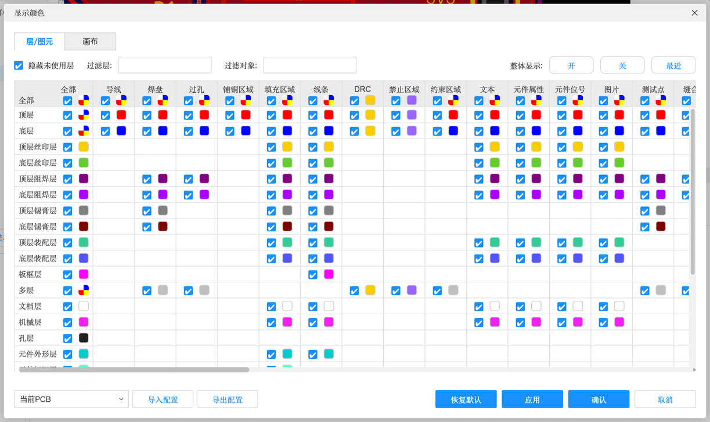
板框与机械结构#
三种基本板框#
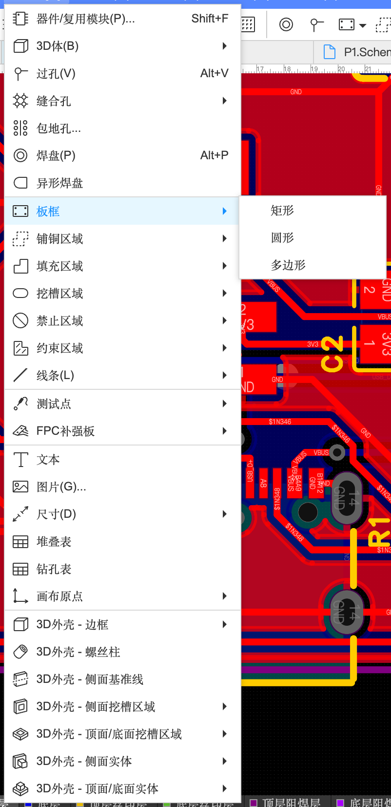
- 矩形：单击两个对角（案例 B）；属性里能填宽、高、圆角半径。
- 圆形：单击圆心、拉出半径（案例 A）；属性里能填中心和半径。
- 多边形：一个个单击顶点，回到起点闭合。之后可以用「编辑」→「添加圆角」把尖角磨圆。
板子可以是任何形状#
板框不一定是方的、圆的。动物、字母、地图轮廓、吉他拨片……只要是一条闭合的线，都能变成板子的外形。你可以在这里尽情做一些定制的创作。本教程实际做了一块猫头形状的小板子，流程是：
- 在绘图软件里画好外形，导出成 DXF 文件（Adobe Illustrator、Inkscape（免费）、AutoCAD、Fusion 360 都能导出 DXF；只要外轮廓一条线，单位用 mm）
- PCB 编辑器：「文件」→「导入」→「DXF…」，选文件
- 在导入对话框里把 DXF 图层的导入层改成「板框层」，点「导入」，在画布上单击放下
- 导入后外形是很多段小线段：⌘A 全选它们 →「编辑」→「合并为闭合线条」
- 单击这条闭合线，右侧属性显示「类型：板框、图层：板框层」，外形就生效了
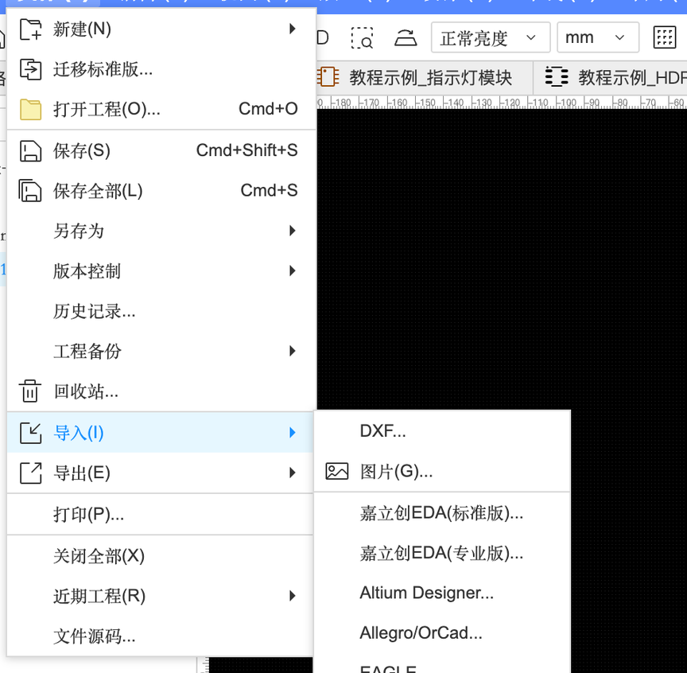
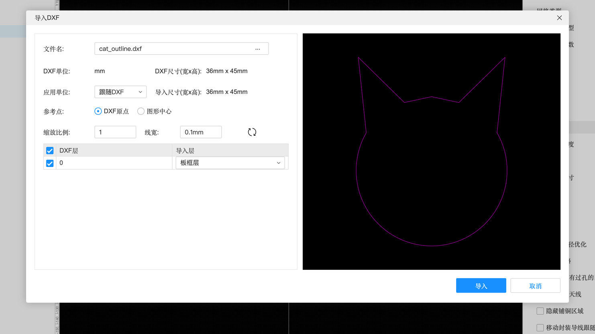
导入 DXF 对话框（实测）
| 选项 | 含义 | 本例 |
|---|---|---|
| 文件名 | 选择的 DXF 文件 | cat_outline.dxf |
| DXF 单位 / DXF 尺寸 | 文件里的单位和图形大小（自动读出） | mm，36 × 45 mm |
| 应用单位 / 导入尺寸 | 导进来按什么单位、多大 | 跟随 DXF |
| 参考点 | 以 DXF 原点还是图形中心对准鼠标 | DXF 原点 |
| 缩放比例 | 整体放大缩小（尺寸不对时改这里） | 1 |
| 线宽 | 导入的线画多粗 | 0.1 mm |
| DXF 层 → 导入层 | DXF 里每一层放到 PCB 的哪一层。外形要放到板框层；也可以把别的层导到丝印层当图案 | 0 → 板框层 |
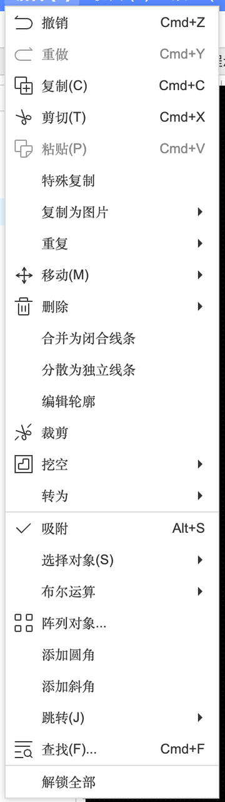
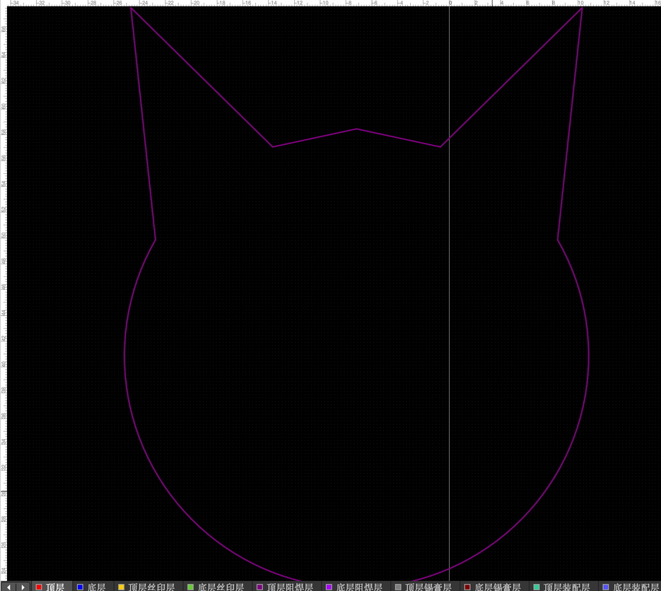
挖槽区域：在板子中间开孔#
板子中间的洞（挂绳孔、镂空图案、给螺丝或按键让位的缺口）用「挖槽区域」。本教程在猫的左耳上开了一个 3 mm 的挂绳孔：
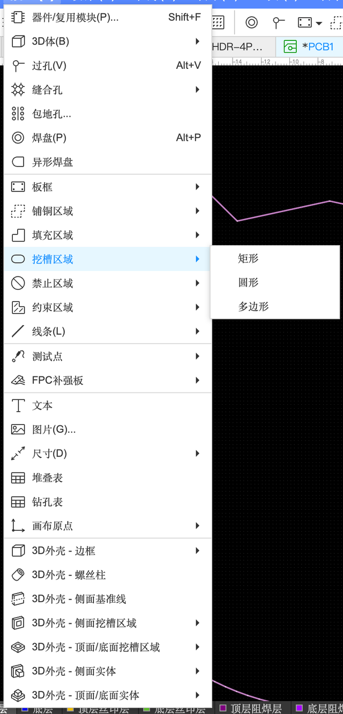
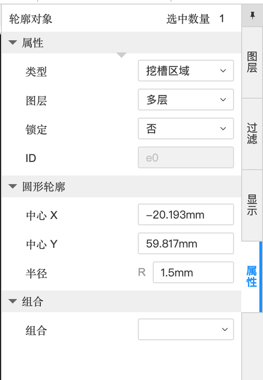
- 挖槽区域是“整块板子穿透挖掉”，所以图层是「多层」。
- 和「钻孔」不同：钻孔是圆的、尺寸有限；挖槽可以是任何形状（多边形挖槽能做出镂空图案）。
- 挖槽离板边、离走线都要留距离，否则 DRC 会报错。
其他机械结构#
| 功能 | 位置 | 用途 |
|---|---|---|
| 尺寸标注 | 放置 → 尺寸 → 长度 / 角度 / 半径 | 在板上标出尺寸，给装外壳的人看（放在文档层或机械层） |
| 安装孔 | 放置 → 焊盘，钻孔设为“非金属化”，或用库里的螺丝孔封装（如“M2.5螺丝”） | 固定板子用的螺丝孔 |
| 画布原点 | 放置 → 画布原点 | 把坐标原点设在板子左下角，方便算位置 |
| 板子形状 | 设计 → 板子形状 → 根据选中生成板子形状 / 根据板子形状生成线条 | 把选中的闭合线条变成板框，或反过来 |
| 3D 外壳 | 放置 → 3D外壳 - 边框 / 螺丝柱 / … | 直接设计外壳并下单（第 10 章） |